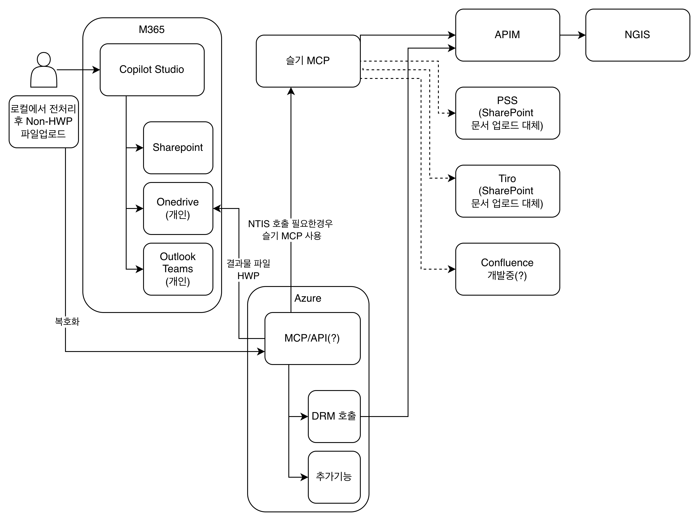

1. 검증 결론
MCP 앱 동작
app/src/index.ts는 POST /mcp에서 Streamable HTTP MCP 요청을 받고, test_lgup 도구가 고정 응답을 반환합니다.
Bicep 컴파일
targetScope = 'subscription'에서 잘못 쓰였던 resourceGroup().id 기반 이름 생성을 수정했고, Bicep 빌드 오류가 사라졌습니다.
실제 Azure 배포
lgup-rg에 전체 리소스를 배포하고, 공개 엔드포인트에서 test lgup mcp ok 응답을 검증했습니다.
요구사항 충족 매트릭스
| 요구사항 | 현재 상태 | 판정 근거 |
|---|---|---|
MCP가 간단히 test lgup mcp ok 반환 |
충족 | test_lgup 도구가 입력 없이 고정 텍스트를 반환하며, 로컬과 배포 엔드포인트 양쪽 tools/call로 검증했습니다. |
Bicep으로 lgup-rg와 하위 리소스 배포 |
충족 | main.bicep는 구독 스코프에서 lgup-rg를 만들고 모듈을 해당 리소스 그룹에 배포합니다. |
| 비공개 ACR 이미지 운영 | 충족 | ACR + AcrPull 역할 + Container Apps registry 설정을 추가했고, 관리 ID로 이미지 pull이 동작합니다. |
| M365 Copilot Studio에서 원격 MCP 호출 | 서버 준비 완료 | 외부 Ingress와 POST /mcp가 인터넷에서 정상 응답합니다. 최종 등록은 Copilot Studio 테넌트 UI에서 수행합니다. |
| Azure Key Vault 기반 인증키 관리 | 부분 구현 | Key Vault 생성 + 관리 ID에 Key Vault Secrets User 부여까지 완료. 앱 코드의 런타임 시크릿 조회는 다음 단계입니다. |
2. 실제 구현 아키텍처
현재 저장소는 컨테이너화된 MCP 서버를 Azure Container Apps에 올리는 구조입니다. Key Vault, Storage, Managed Identity, Log Analytics, Application Insights는 Bicep으로 생성되며, 관리 ID가 ACR pull과 Key Vault 접근을 담당합니다.
POST /mcp/mcp 프록시test_lgup tool, /health, /mcp구성 파일 기준
| 파일 | 실제 역할 | 검증 메모 |
|---|---|---|
main.bicep |
구독 스코프 배포, lgup-rg 생성, 모듈 조합 |
컴파일 오류 수정 완료. 배포 명령은 az deployment sub create가 맞습니다. |
modules/application.bicep |
Container Apps Environment와 Container App 생성 | Ingress는 외부 공개, transport: 'auto', registry는 관리 ID로 pull. |
modules/platform-foundation.bicep |
Managed Identity, Key Vault, Storage 생성 + Key Vault Secrets User RBAC | 관리 ID에 Key Vault 접근 역할 부여 완료. |
modules/registry.bicep |
ACR 생성 + 관리 ID에 AcrPull 역할 부여 |
비공개 이미지 pull을 위한 신규 모듈. |
app/src/index.ts |
Express + MCP SDK 기반 Streamable HTTP 서버 | POST /mcp와 GET /health 구현. 인증 미들웨어 없음. |

3. MCP 요청 스펙: 이 프로젝트에서 맞는 형태
/mcp 하나입니다.
REST형 하위 경로는 만들지 않고, method 값을 initialize, tools/list, tools/call로 보냅니다.
헬스 체크
GET /health
Response:
{
"status": "ok",
"server": "lgup-mcp-server",
"version": "1.0.0"
}
Initialize
POST /mcp
Content-Type: application/json
Accept: application/json, text/event-stream
{
"jsonrpc": "2.0",
"id": 1,
"method": "initialize",
"params": {
"protocolVersion": "2025-06-18",
"capabilities": {},
"clientInfo": {
"name": "copilot-studio-or-test-client",
"version": "1.0.0"
}
}
}
Tools list
POST /mcp
Content-Type: application/json
Accept: application/json, text/event-stream
{
"jsonrpc": "2.0",
"id": 2,
"method": "tools/list"
}
Tool call
POST /mcp
Content-Type: application/json
Accept: application/json, text/event-stream
{
"jsonrpc": "2.0",
"id": 3,
"method": "tools/call",
"params": {
"name": "test_lgup",
"arguments": {}
}
}
Expected content text:
"test lgup mcp ok"
현재 서버의 의도된 제약
| 항목 | 현재 동작 | 의미 |
|---|---|---|
GET /mcp |
405 Method Not Allowed | 서버 주도 SSE 스트림을 제공하지 않는 stateless 테스트 서버입니다. |
DELETE /mcp |
405 Method Not Allowed | 서버가 세션 ID를 발급하지 않으므로 세션 종료도 제공하지 않습니다. |
| 인증 | 없음 | 연결성 확인용입니다. 운영 노출 전에는 OAuth/Entra 보호를 추가해야 합니다. |
4. 배포 런북
4-1. 로컬 검증
cd output/260618_joins_architecture/azure-m365-mcp/app npm install npm run build PORT=8080 npm start
curl -s http://localhost:8080/health
curl -s -X POST http://localhost:8080/mcp \
-H "Content-Type: application/json" \
-H "Accept: application/json, text/event-stream" \
-d '{"jsonrpc":"2.0","id":1,"method":"tools/call","params":{"name":"test_lgup","arguments":{}}}'
4-2. 이미지 준비 (ACR 클라우드 빌드)
# 1차 배포로 ACR 등 인프라 생성 후, 그 ACR에 이미지 빌드/푸시 az acr build --registry <acrName> --image lgup-mcp-server:1.0.0 ./app export CONTAINER_IMAGE="<acrName>.azurecr.io/lgup-mcp-server:1.0.0"
4-3. 구독 스코프 Bicep 배포
az login az account set --subscription "<SUBSCRIPTION_ID>" az deployment sub create \ --name lgup-mcp-dev \ --location koreacentral \ --template-file main.bicep \ --parameters main.local.bicepparam \ --parameters containerImage="$CONTAINER_IMAGE" APP_URL=$(az deployment sub show \ --name lgup-mcp-dev \ --query "properties.outputs.containerAppUrl.value" \ -o tsv) echo "$APP_URL"
4-4. 배포 후 검증
curl -s "$APP_URL/health"
curl -s -X POST "$APP_URL/mcp" \
-H "Content-Type: application/json" \
-H "Accept: application/json, text/event-stream" \
-d '{"jsonrpc":"2.0","id":1,"method":"tools/call","params":{"name":"test_lgup","arguments":{}}}'
https://lgmcp-dev-mcp-api.gentledune-e80525cb.koreacentral.azurecontainerapps.io/mcp에서
tools/call test_lgup 호출 시 test lgup mcp ok 응답을 확인했습니다.
5. 운영 수준 보강 항목
ACR pull과 Key Vault RBAC는 적용 완료했습니다. 남은 항목은 인증과 Key Vault 런타임 조회, Origin 검증입니다.
비공개 ACR Pull
Container Apps가 user-assigned identity로 ACR 이미지를 pull하도록 registry 설정과 AcrPull 역할을 추가했습니다.
인증 보호
테스트 서버는 무인증입니다. 운영에서는 Entra ID/OAuth 2.1 기반 Bearer token 검증과 audience validation을 추가합니다.
Key Vault 런타임 조회
관리 ID에 Key Vault Secrets User 부여까지 완료. 앱이 Key Vault를 읽거나 Container Apps secret reference를 쓰도록 마무리합니다.
Origin / CORS 정책
MCP Streamable HTTP 서버는 Origin 검증을 구현하는 것이 권장됩니다. 공개 노출 시 DNS rebinding 방어가 필요합니다.
운영 인증 방향
| 환경 | 권장 방식 | 비고 |
|---|---|---|
| 연결성 테스트 | 무인증 또는 제한된 네트워크 | 현재 서버 상태. 공개 인터넷 장기 노출은 피합니다. |
| 파일럿 | APIM 또는 Container Apps 앞단 인증 | 토큰 검증, rate limit, 로그 감사를 중앙화합니다. |
| 운영 | Entra ID/OAuth + MCP protected resource metadata | Bearer token은 매 HTTP 요청에서 검증하고, 토큰 audience는 MCP 서버로 제한합니다. |
6. Copilot Studio 연결 시 확인할 점
- 서버 URL은
https://<container-app-fqdn>/mcp한 개입니다. - 전송 방식은 Streamable HTTP입니다. 클라이언트는
Accept: application/json, text/event-stream을 보낼 수 있어야 합니다. - 도구 목록에서
test_lgup가 보여야 합니다. - 도구 호출 결과의 텍스트가
test lgup mcp ok이면 서버 연결은 성공입니다. - 운영 전에는 무인증 서버를 그대로 노출하지 말고 Entra ID/OAuth 또는 APIM 보호를 추가합니다.
7. 부록: VM으로 전환해야 하는 경우
현재 프로젝트는 Container Apps가 기준입니다. VM이 정책상 필요하면 modules/application.bicep를
Microsoft.Compute/virtualMachines, NSG, Public IP 또는 Load Balancer, systemd 서비스 구성으로 교체해야 합니다.
이 경우에도 MCP endpoint는 동일하게 POST /mcp를 유지하는 것이 좋습니다.
| 선택지 | 장점 | 주의점 |
|---|---|---|
| Container Apps | 패치 부담 적음, Ingress/스케일 쉬움, 현재 저장소와 일치 | 비공개 ACR/인증 설정은 명시적으로 보강 필요 |
| Azure VM | 네트워크/런타임 제어가 가장 큼 | OS 패치, TLS, systemd, 로그/백업/NSG를 직접 운영해야 함 |
8. 리소스 그룹(lgup-rg) 리소스별 용도·설명·목표
아래는 실제 배포된 리소스 그룹 lgup-rg(koreacentral)에 생성된 리소스 각각의 역할입니다.
이름은 접두사 lgmcp + 환경 dev 규칙을 따르며, 일부는 전역 고유 접미사가 붙습니다.
| 리소스 | 리소스 종류 | 용도 / 설명 | 목표 |
|---|---|---|---|
lgmcp-dev-apim-… |
API Management (Consumption) | Container App 앞단 게이트웨이. Entra Bearer 토큰을 검증한 뒤 /mcp로 프록시. |
거버넌스·인증·rate limit을 적용한 단일 앞단 제공 |
lgmcp-dev-mcp-api |
Container App | MCP 서버(lgup-mcp-server) 컨테이너를 실행. 외부 HTTPS Ingress로 /mcp와 /health를 노출하고 test_lgup 도구를 제공. |
Copilot Studio가 호출할 MCP 엔드포인트 제공 |
lgmcp-dev-cae |
Container Apps Environment | 컨테이너 앱의 실행 경계(네트워크·로그·스케일 단위). Log Analytics와 연결되어 로그를 전송. | 서버리스 컨테이너 실행 환경 제공 |
lgmcpdevacr… |
Container Registry (ACR) | MCP 컨테이너 이미지(lgup-mcp-server:1.0.0)를 저장. 관리 ID의 AcrPull 권한으로 비공개 pull. |
신뢰된 비공개 이미지 배포 원본 확보 |
lgmcp-dev-uami |
User Assigned Managed Identity | 암호 없는 인증 주체. ACR(AcrPull)과 Key Vault(Key Vault Secrets User) 권한을 보유. |
시크릿리스(자격증명 비저장) 보안 접근 |
lgmcpdevkv… |
Key Vault | API 키·연결 문자열 등 민감정보를 RBAC 인증으로 보관. | 인증키/시크릿의 중앙 보관과 접근 통제 |
lgmcpdevst… |
Storage Account | blob 컨테이너 incoming-nonhwp, result-hwp, processing-artifacts를 제공. |
입력·결과·중간 산출물 파일 저장소 |
lgmcp-dev-law |
Log Analytics Workspace | 컨테이너 앱과 플랫폼 로그를 수집·쿼리하는 백엔드. | 중앙 로그 관측성 확보 |
lgmcp-dev-appi |
Application Insights | 앱 요청·성능·예외를 추적하는 APM. Log Analytics 기반으로 동작. | 애플리케이션 모니터링/진단 |
| Smart Detection / smart-detector alert | 자동 생성(모니터 알림 규칙) | Application Insights·Storage 생성 시 Azure가 자동 추가하는 이상 감지 규칙. | 이상 징후 자동 감지(기본 제공) |
AcrPull)하고, 필요 시 Key Vault에서 시크릿을 읽으며(Key Vault Secrets User),
로그는 Log Analytics로, 애플리케이션 텔레메트리는 Application Insights로 흐릅니다. 이 모든 인증은 User Assigned Managed Identity로 처리되어
코드나 설정에 자격증명을 저장하지 않습니다.
9. API Management 게이트웨이 (앞단 보호)
거버넌스와 보안을 위해 Container App 앞에 Azure API Management(Consumption) 게이트웨이를 두었습니다. 외부에서는 게이트웨이 URL로만 접근하며, Entra Bearer 토큰이 없거나 유효하지 않으면 401로 차단됩니다.
| 항목 | 값 / 동작 |
|---|---|
| 게이트웨이 MCP URL | https://<apim>.azure-api.net/mcp |
| 인증 | Entra Bearer 토큰 필수 |
| 토큰 없음/오류 | HTTP 401 (차단) |
| 유효한 토큰 | Container App으로 프록시 후 test lgup mcp ok 반환 |
| SSE 처리 | buffer-response="false" 정책으로 Streamable HTTP 응답 통과 |
Entra access token 준비
클라이언트는 대상 API의 authClientId를 audience로 갖는 Entra access token을 발급받아 Authorization: Bearer <token> 헤더로 전달합니다.
게이트웨이를 통한 호출
curl -s -X POST "https://<apim>.azure-api.net/mcp" \
-H "Content-Type: application/json" \
-H "Accept: application/json, text/event-stream" \
-H "Authorization: Bearer <ENTRA_ACCESS_TOKEN>" \
-d '{"jsonrpc":"2.0","id":1,"method":"tools/call","params":{"name":"test_lgup","arguments":{}}}'
*.azure-api.net)를 커스텀 커넥터로 봅니다.
DLP 정책에서 해당 호스트를 Business/Non-Business 그룹으로 허용해야 연결이 통과됩니다.